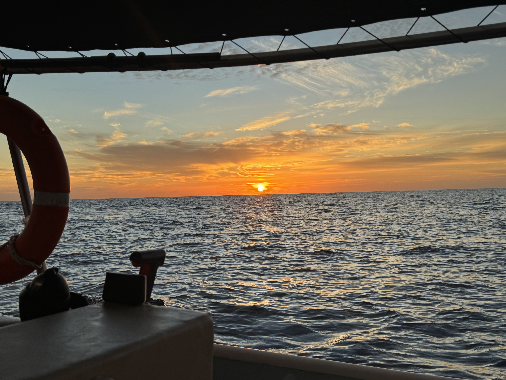
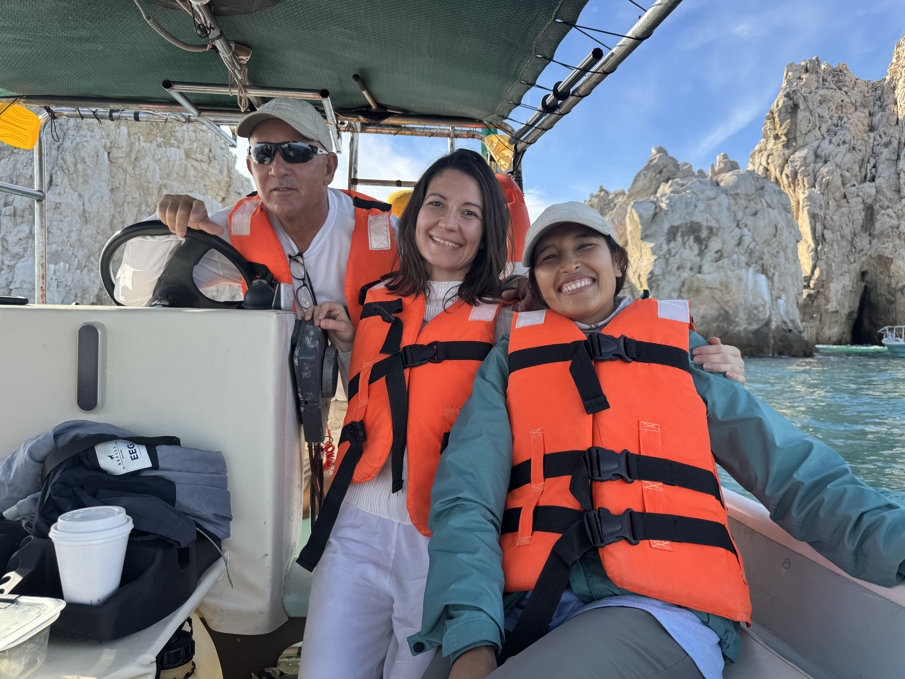
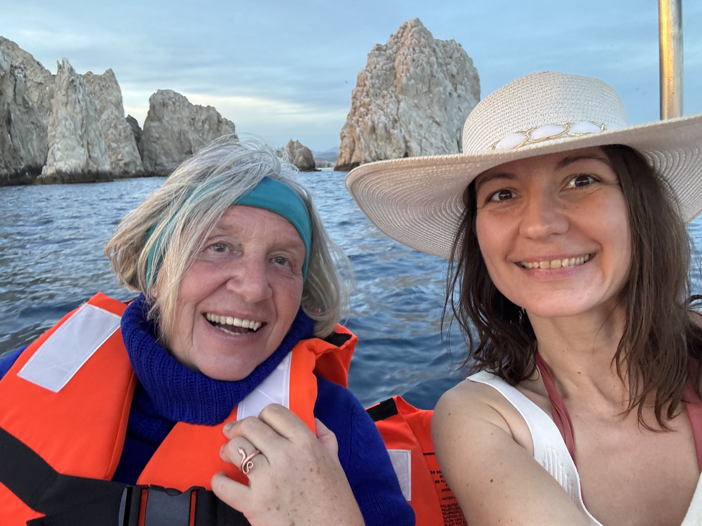
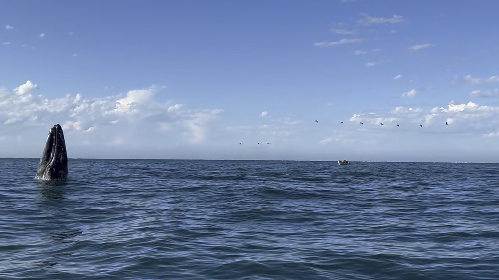

22. Februar – 08. März 2027 · Baja California Sur, Mexiko
Heilreise
zu den Walen
Eine Reise zu den Walen. Und zu dir selbst.
Mehr entdecken
22. Februar – 08. März 2027 · Baja California Sur, Mexiko
Eine Reise zu den Walen. Und zu dir selbst.
Mehr entdeckenGolf von Kalifornien · UNESCO-Weltnaturerbe
Wir begegnen den sanften Meeressäugern achtsam, respektvoll und tragen aktiv zum Schutz der Meere bei. Der Golf von Kalifornien gilt seit Jacques Cousteau als das „Aquarium der Welt" – ein UNESCO-Weltnaturerbe voller Blauwale, Buckelwale, Delfine, Seelöwen und Schildkröten.

Die größten Tiere der Erde – bis zu 30 Meter lang – so nah erleben wie nirgendwo sonst auf der Welt. In den geschützten Gewässern vor Loreto kommen Blauwale zur Paarung und fühlen sich sicher genug, um private Bootstouren in ihre unmittelbare Nähe zu ermöglichen. Geführt von einem erfahrenen Kapitän, in kleinen Gruppen, achtsam und auf Augenhöhe.

Weltweit einzigartig: Nur hier kommen Grauwale so nah ans Boot, dass man sie fast anfassen kann. Die zutraulichsten und verspieltesten Wale der Welt suchen aktiv die Begegnung mit Menschen – in kleinen Panga-Booten mit lokalen Fischern, inmitten eines UNESCO-Weltnaturerbes. 6 Waltouren über 3 Tage. Das Herzstück der Reise.

„In der Stille des Ozeans begegnet man dem Größten – und kehrt verändert zurück."
Tag 1 – 5
Ankunft & Eingewöhnen. Blauwale & Buckelwale im „Aquarium der Welt". 2 private Waltouren inklusive mit eigenem Kapitän.
Tag 6 – 10
Das Herzstück der Reise. Grauwale in der Lagune – 3 Tage, 6 Touren. Glamping-Unterkunft mitten in der Oase, nahe der alten Mission.
Tag 10 – 12
Rückkehr & Ausklang. Gemeinsame Meditationen, Sharing-Kreise und die Integration des Erlebten.
Optional · Tag 13 – 16
Aktiver Meeresschutz in Todos Santos & La Paz. Freilassung von Schildkrötenbabys, ein Tag als Forscherin auf hoher See.
01
Speziell ausgebildete Kapitäne & Guides. Strenge Richtlinien zum Schutz der Meeressäuger. Maximal 6 Teilnehmer pro Boot.
02
Meditationen am Meer, Sharing-Kreise zur Integration der Walbegegnungen. Optional buchbar: 1:1-Sessions für tiefe Transformation.
03
Vorbereitende Gruppen-Calls & Einzelsitzungen online. Nachsorge, um das Erlebte bestmöglich zu integrieren.
04
Kein Jagen, kein Drängen. Die Wale suchen die Begegnung mit uns – wir öffnen uns und empfangen. Jede Sichtung ist ein Geschenk.
05
Bewusst klein gehalten – für eine intensive, persönliche Erfahrung und um die Tiere so wenig wie möglich zu stören.
06
Optional: Contribution Days – 3 extra Tage für aktiven Meeresschutz. Den Tieren etwas zurückgeben von dem, was sie uns geschenkt haben.


Ein Early Whale-Angebot gilt bis zum 15. Mai 2026 –
sichere dir deinen Platz in dieser kleinen, exklusiven Gruppe.
✦ Early Whale · bis 15. Mai 2026
3.000 €
pro Person · du sparst 600 € gegenüber dem regulären Preis
Nicht inklusive: Flug · Auslands-KV · Abendessen · 1:1-Sessions · ggf. Trinkgeld für Kapitäne
Regulär · ab 16. Mai 2026
3.600 €
pro Person · zzgl. optionale Contribution Days +500 €
Nicht inklusive: Flug · Auslands-KV · Abendessen · 1:1-Sessions · ggf. Trinkgeld
Drei extra Tage in Todos Santos & La Paz: Mitarbeit beim Meeresschutz, Freilassung von Meeresschildkrötenbabys und ein Tag als Forscherin auf einem wissenschaftlichen Boot.
Der Grundgedanke ist es, den Tieren etwas zurückzugeben von dem, was sie uns geschenkt haben.
Diese Heilreise findet in einer sehr ursprünglichen und abgelegenen Region statt, fernab dichter Infrastruktur und mit begrenzter Nähe zu medizinischer Versorgung. Genau diese Abgeschiedenheit ist Teil der Erfahrung – sie öffnet einen Raum, in dem Natur wieder unmittelbar spürbar wird. Die Reise umfasst Aufenthalte auf dem offenen Meer sowie Begegnungen mit Wildtieren. Wetter, Meer und Tiere folgen ihrem eigenen Rhythmus – nicht unserem.
Diese Reise ist kein klassisches Tourismusangebot, sondern eine bewusst gestaltete Erfahrung im Zusammenspiel mit der Natur. Du bist eingeladen, achtsam mit dir selbst zu sein, deine Grenzen wahrzunehmen und die Anweisungen der Begleitung sowie der lokalen Kapitäne und Guides zu respektieren.
Die Begegnung mit Walen geschieht in ihrem natürlichen Rhythmus und kann nicht erzwungen oder garantiert werden. Jede Sichtung ist ein Geschenk des Moments und der Natur.
Neben der äußeren Bewegung im Ozean ist diese Reise auch eine Einladung zur inneren Ausrichtung, zur Stille und zur Rückverbindung mit deiner eigenen Wahrnehmung. Sie ersetzt keine medizinische oder therapeutische Behandlung, sondern versteht sich als ergänzender Erfahrungsraum.
Dein Platz ist verbindlich reserviert, sobald eine Anzahlung auf dem Konto eingeht. Der verbleibende Betrag wird bis vor Reisebeginn vollständig ausgeglichen. Eine flexible Weitergabe des Platzes an eine geeignete Ersatzperson ist nach Absprache möglich. Stornierungen sind bis zu bestimmten Zeitpunkten anteilig möglich und dienen einem fairen und klaren Rahmen für alle Beteiligten.
Diese Reise ist eine Einladung, dich dem Leben auf eine ursprüngliche Weise zu nähern – im Kontakt mit dem Meer, den Walen und mit dir selbst. Mit Offenheit. Mit Wertschätzung. Mit Präsenz.